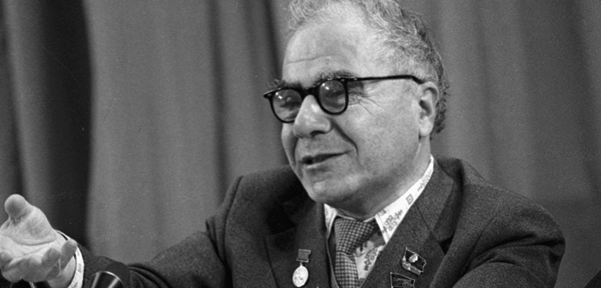

Home
About
Hystory
Achievments
Press Releases
Exploration
Solar System Explorer
News
Gallery
Telescopes
ZTA 2.6m Telescope
1m Shmidt Telescope
53sm Shmidt Telescope
Other Telescopes
All Sky
Activities
Publications
Meetings
Seminars
Special Council
Research Groups
Active Galaxies
Archaeoastronomy and Cultural Astronomy
Astrochemistry, Astrobiology and Exoplanets
Astronomical Surveys
Cosmic Compact Objects and Relativistic Gravity
High Energy Astrophysics
Non-Stable Phenomena
Supernovae
Theoretical Astrophysics
Young Stellar Objects
Individual Researcher - Gyulbudaghian Armen
Staff
Annual Reports
BAO annual Report 2018
BAO annual Report 2017
BAO annual Report 2016
BAO annual Report 2015
BAO annual Report 2014
BAO annual Report 2013
BAO annual Report 2012
BAO annual Report 2011
BAO annual Report 2010
BAO annual Report 2009
BAO annual Report 2008
OUR HISTORY
Watch History

Viktor
Hambardzumyan
Armenian Astrophisic who changed the world
Byurakan Astrophisical Observatory
Our History
Viktor Hambardzumyan
Viktor Hambardzumyan Armenian Astrophisic
The modern astronomy in Armenia begins with the foundation of the Byurakan Astrophysical Observatory (BAO). It is one of the most important astronomical centres in Eastern Europe and Middle East region, both by its scientific instruments and achievements. The Observatory was founded in 1946 on the initiative of Viktor Ambartsumian (1908-1996), the famous Armenian scientist of the 20th century. BAO is situated on the southern slope of Mt. Aragatz (with highest peak at 4090 m altitude), near village Byurakan, some 30 km Northwest to Yerevan, the capital of Armenia. The geographic coordinates are 2h57m10s E, 40°20'07" N, and the altitude is 1405m. BAO is affiliated to the Armenian National Academy of Sciences (NAS RA) and is one of its most important institutions. V.A. Ambartsumian became the first director of the observatory, and main directions of astrophysical investigations were determined by him. <br> First studies at the Byurakan Observatory related to the instability phenomena taking place in the Universe, and this trend became the main characteristic of the science activity in Byurakan. <br> Haik Badalian, Beniamin Markarian, Ruben Sahakian, Grigor Gurzadyan, Ludwik Mirzoyan, Nina Ivanova, Vagharshak Sanamian, Marat Arakelian, Edward Khachikian, and Karlos Grigorian were among the first astronomers, who began their scientific life with the observatory and continued it for many years. In 1946 Communications of the Byurakan Observatory were founded as the main journal for Byurakan astronomers. V.A. Ambartsumian became its first editor-in-chief. The building works began in the spring of 1946 under the supervision of famous architect Samvel Safarian. The first structures were the central building, hotel and the towers of the first astronomical instruments: 5І double astrograph, 8І/12І Schmidt telescope, 10І telescope-spectrograph, nebular spectrograph, 16І Cassegrain telescope and 21І/21І (53 cm) Schmidt telescope. They were built up in 1951-55. The 21І/21І telescope was the main instrument for those years, being used for the investigation of structure and radiation properties of galaxies. Since 1950 works on construction of radiotelescopes began. Two synphased antennas for observations in 4.2 m wavelength and two synphased antennas for 1.5 m wavelength were constructed. In 1950-1951 the laboratories of instrument-making, radioastrophysics, stellar astronomy and spectroscopy, as well as observatory’s library were organized. Scientific results came just after the foundation of the Byurakan Observatory. In 1947 stellar systems of new type, stellar associations were discovered by V.A. Ambartsumian. It was proved that at present star-forming processes are going on in the Universe, and stars are being formed by groups. Ambartsumian put forward an idea of star-forming in stellar associations together with gas and dust. In November 1951, the first scientific meeting was held in the Byurakan Observatory (see Byurakan meetings). Stellar Associations were the subject of the conference. The observatory was not entirely built yet, but the investigations of Byurakan astronomers became well-known to the international astronomical community. On September 19, 1956, the official opening of the Byurakan Observatory was celebrated by holding a conference on Non-stable stars. J. Greenstein, G. Herbig, G. Haro, E. Schatzman, P.L. Kapitsa, B.V. Kukarkin, V.V. Sobolev and other prominent scientists were among the guests. In the mid-50s V.A. Ambartsumian gave a new explanation for radiogalaxies radiation and proposed a new conception on the activity of galactic nuclei. By the time, it was accepted by all the astronomers, and at present most of the astrophysical observatories have the subject of Active Galactic Nuclei (AGN) as one of their main research areas. The discovery of stellar associations and Ambartsumian’s idea about activity of galactic nuclei, as well as investigations on radiation transfer theory, based on Ambartsumian’s principle of invariance, elucidated the further development of the research activities in Byurakan Observatory. V.A. Ambartsumian and R.K. Shahbazian found in nearby galaxies concentrations of young stars, which they called superassociations, as well as blue companions around some galaxies, which might be thrown out from them. Later on, they found compact groups of compact galaxies (named after Shahbazian); objects that are subject for detailed studies up to present days. In early 1960s, V.A. Ambartsumian and G.S. Sahakian (YSU) studied possible states of superdense matter and proved the possibility of existence of baryonic and hyperionic configurations with nuclear-like densities and of several Solar masses. In 1960, a new Schmidt telescope with 40І (102 cm) correcting plate and 52І (132 cm) mirror was installed in Byurakan. Soon, in 1965, B.E. Markarian started a survey with a goal of revealing UV-excess galaxies (First Byurakan Survey – FBS, co-authors V.A. Lipovetski and J.A. Stepanian). It was continued for 15 years and became one of the most famous surveys in modern astronomy. As a result, 1500 galaxies with UV-excess, named now Markarian galaxies, were discovered. Up to now, Byurakan Schmidt is one of the largest and one of the most efficient Schmidt telescopes in the world. The Markarian survey was the first systematic survey for AGN, and until now is the largest spectroscopic survey in the world. Observations of Markarian galaxies in Byurakan and other observatories revealed a lot of new interesting objects. E.Ye. Khachikian, together with D. Weedman (USA), discovered many new Seyfert-type galaxies and for the first time made a classification of these AGN. H.M. Tovmassian and colleagues discovered and studied the radio emission of many Markarian galaxies. More active galaxies were discovered from the lists compiled by M.A. Arakelian, who selected and published galaxies with high surface brightness. Later on Markarian galaxies have been studied by K.A. Sahakian, A.R. Petrosian, et al. In 1964 and 1971 conferences on extraterrestrial civilizations were held. The meeting of 1971 was the first international symposium on the problem of Extraterrestrial Civilizations and Communication with Them. Many prominent scientists, including astronomers, physicists, chemists, biologists, philosophers, and specialists of other related fields participated in the symposium. In 1965 an all-Union astrophysical journal, Astrofizika (English translation: Astrophysics) was founded, and Byurakan astronomers began to publish their papers mainly in it. The Astrofizika became the main astrophysical journal of the Soviet Union as well. IAU Symposium No. 29 in May 1966 on Non-Stable Phenomena in Galaxies will remain as one of the most interesting events during the history of the observatory. J. Oort, F. Zwicky, G. Burbidge, E. Burbidge, M. Schmidt, and many other well-known scientists were present. In 1960, H.S. Badalian carries out classification of cometary nebulae. E.S. Parsamian discovered many new cometary nebulae and published their catalogs (1965, 1979). Later on, A.L. Gyulbudaghian and T.Yu. Magakian found and studied the variability of some cometary nebulae. Together with colleagues, later on they discovered and studied many other young stellar objects and stellar jets. In 1968, for its great merit to the development of science, the Byurakan Observatory was awarded the highest prize of the Soviet Union, Lenin Order. A conference was held, devoted to V.A. Ambartsumian’s 60-years anniversary. He presented a new work on statistical investigation of flare stars, estimating the real number of these objects, and predicted that all dwarf stars pass through the stage of flare activity. Beginning with the late 60s, the investigation of flare stars became one of the main subjects of the Byurakan Observatory. Hundreds of flare stars in star clusters and associations (Pleiades, Orion, Hyades, Praesepe, Cygnus, Coma, etc.) were discovered by L.V. Mirzoyan, E.S. Parsamian, H.S. Chavushian, L.K. Erastova, N.D. Melikian, et al. Early stages of evolution of dwarf non-stable stars were investigated. A project on space astronomy studied in Byurakan in late 60s. Under the supervision of G.A. Gurzadyan, Byurakan scientists designed and built two ultraviolet “Orion” space observatories that operated onboard Soviet spacecrafts in 1971 and 1973. Later on, H.M. Tovmassian designed and built “Glazar” space observatory, which operated in 1987 onboard Soviet space station “Mir”. A.G. Nikoghossian, M.A. Mnatsakanian, and N.B. Yengibarian in late 1960s and 1970s obtained new solutions in radiation transfer theory with application of principle of invariance for finite thickness layers and plain-parallel medium. They also obtained new results in various fields of mathematical physics. The installation of the 2.6 m telescope (one of the largest telescopes in the world at that time) was rather important event in the observatory’s life. The opening of the telescope in October 1976 was accompanied by a symposium on Flare Stars. Scientific meetings on these and related objects were held in 1979 and 1984, too. Since 1977, a specialized council for theses defenses functions. V.A. Ambartsumian was its chairman in 1977-96. The council accepts theses on astronomy, astrophysics and theoretical physics. More than 50 scientists have defended Ph.D. (Candidate) and Doctoral theses during these years. In 1978 the Second Byurakan Survey (SBS) was conducted by B.E. Markarian, J.A. Stepanian, et al. The main goal was to obtain a homogeneous sample of quasars, emission-line and UV-excess galaxies for further cosmological investigations. More than 600 deep-limit plates were obtained during 15 years and some 3600 interesting objects were discovered. In October 1981, a Symposium on Principle of Invariance and its Applications was held. It was devoted to the 40th anniversary of the Principle of invariance, Ambartsumian’s theory, which found many applications in various fields of science. In 1980s two IAU symposia were organized in Byurakan. IAU Symposium No. 121 on Observational Evidences of Activity in Galaxies (June 1986) gathered many outstanding astrophysicists from 15 countries. Many aspects of Ambartsumian’s hypothesis and the classical theory of AGN were discussed. IAU Symposium No. 137 on Flare Stars in Star Clusters, Associations and Solar Vicinity was held in October 1989 and gathered specialists of the corresponding field. Byurakan Observatory was recognized as one of the world main centres of investigations on flare stars. In 1987 the Second Part of the First Byurakan Survey (FBS) was conducted, search and studies of the FBS stellar objects; both blue (UV excess) stellar objects (BSOs) and red (late-type) stars. It was carried out by H.V. Abrahamian, A.M. Mickaelian, and K.S. Gigoyan and resulted in discovery of 1103 BSOs (including bright QSOs, Seyferts, white dwarfs, cataclysmic variables, etc.) and nearly 1000 red stars (late M-type and C stars). Later on, in 1995-2004 A.M. Mickaelian conducted a project of optical identifications of IRAS point sources and revealed more than 1200 IR galaxies, including a number of new AGN, ULIRGs, compact galaxies, etc. In 1986 the research divisions were abolished and small research groups were formed for more efficient scientific work. The divisions were re-established in 1995 and exist together with groups, each including a few of them. In 1988 V.A. Ambartsumian retired from the position of director of the observatory, and E.Ye. Khachikian occupied it. V.A. Ambartsumian remained the honorary director of BAO until his death in 1996. In 1993-94 H.A. Harutyunian was the acting director, in 1994-1999, the director was A.R. Petrosian, and in 1999-2003, E.Ye. Khachikian became the director for the second term. Since 2003, H.A. Harutyunian is the director of BAO. After the disintegration of the Soviet Union, the Byurakan astronomers underwent difficult situation in economy and science, however, in a few years a new activity began in mid-90s with some re-organizational process and new international collaborations. Due to French astronomers, the 2.6m telescope was equipped with new instrumentation and started to give new interesting results. Two meetings (French-Armenian Astronomical Colloquium in 1995 and an International Symposium, devoted to the 50th anniversary of the Byurakan Observatory in October 1996) showed that astronomers of the Byurakan Observatory continue to develop Ambartsumian’s ideas and have achieved new interesting results. In August 1998, the IAU Symposium No. 194 on Activity in Galaxies and Related Phenomena, dedicated to Ambartsumian’s 90th anniversary, was held in Byurakan. Some 100 astronomers – the most known specialists of the field from 22 countries, presented and discussed their results and prospects in this area. A new important meeting, IAU Colloquium No. 184 on AGN Surveys was organized in Byurakan in June 2001. 88 scientists from 16 countries took part. The meeting was devoted to B.E. Markarian, the scientist who carried out the first systematic survey for active galaxies and opened a new era of investigations. One of the important activities in Byurakan is the organization of summer schools and astronomical Olympiads (competitions for pupils and students). Several such events were organized in 1995-2005, and the First Byurakan International Summer School was held in August-September 2006, where 8 foreign lecturers and some 30 students participated. The next school was organized in September 2008. The Byurakan International Summer Schools will be held regularly once in each two years, and an IAU International School for Young Astronomers (ISYA) is planned for 2010. In 2002-2005, in collaboration with Universitа di Roma “La Sapienza” (Italy) and Cornell University (USA) teams, the Markarian survey (First Byurakan Survey) plates were digitized and the Digitized First Byurakan Survey (DFBS) database was created. It is one of the largest spectroscopic databases in the world and the largest astronomical database in Armenia, created by A.M. Mickaelian and colleagues. The project of the Armenian Virtual Observatory (ArVO) was put forward. In 2005, ArVO entered the International Virtual Observatory Alliance (IVOA). In August 2007, the Byurakan Observatory, together with the European and Armenian astronomical societies and Yerevan State University, was one of the organizers of the JENAM-2007 in Yerevan, the Joint European and National Astronomy Meeting. It was the largest scientific event ever organized in Armenia; 8 parallel EAS symposia and 5 special parallel sessions were organized. 248 scientists from 31 countries participated, and 358 plenary, invited, oral, and poster contributions were presented. Due to obtained results the Byurakan Observatory is recognized by the scientific community as one of the main centres for astrophysical research. The conceptions and ideas proposed in Byurakan have found their further elaboration in many observatories, a few thousands of new objects discovered in Byurakan are observed worldwide by famous astrophysicists. Byurakan astronomers have participated in all large international astronomical meetings: International Astronomical Union(IAU ) General Assemblies, Symposia, and Colloquia (see here). Many of them are members of various IAU Commissions. V.A. Ambartsumian was IAU President in 1961-64 and Vice-President in 1948-55, B.E. Markarian and E.Ye. Khachikian have been the Presidents of the IAU Commission No. 28 (Galaxies), each for 3 years. The prestige of the Byurakan Observatory was enhanced by the many-years fruitful research work and is on high level during its 60-years history. Many international scientific meetings have been held in Byurakan and dozens of astronomical institutions all over the world collaborate with the Byurakan Observatory, including observatories and astronomical institutes of Australia, France, Germany, Italy, Japan, Mexico, Russia, Spain, UK, USA, etc. Nobel Prize winners Pablo Neruda (Chile), Subrahmanyan Chandrasekhar (USA), Charles Towns (USA), Francis Crick (UK), Freeman Dyson (USA), Piotr Kapitza (USSR), and Shinichiro Tomonaga (Japan), outstanding scientists J. Oort, F. Zwicky, J. Greenstein, G. Herbig, G. Haro, H. Arp, B. Bok, E. Burbidge, G. Burbidge, M. Schmidt, V.M. Keldish, Y.B. Zeldovich, V.L. Ginzburg, and many others and other honorary guests have visited the Byurakan Observatory to make an acquaintance of famous astronomical centre, study its scientific program, discuss different scientific problems with Byurakan astronomers and to take part in joint investigations. Since 1998 the Byurakan Observatory bears the name of V.A. Ambartsumian – its founder and scientific leader for many years. It is now more than 60 years that the Byurakan Observatory is among the world astronomical centers and successfully continues its new discoveries and high-level research.